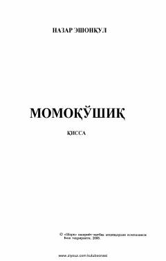

MHashar bahonasida yuzaga kelgan insoniy munosabatlar va kechinmalar tasvirlangan qissa.
Ushbu asarda hashar bahonasida dalaga kelgan turli qatlam vakillari va mahalliy aholi o'rtasidagi munosabatlar, insoniy kechinmalar tasvirlangan. Nazar Eshonqul qalamiga mansub mazkur qissa o'ziga xos ruhiy tahlillar va hayotiy lavhalarga boy.